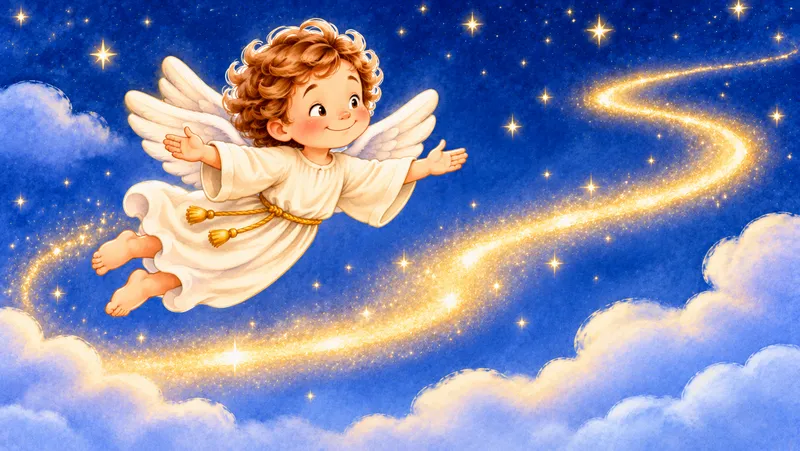
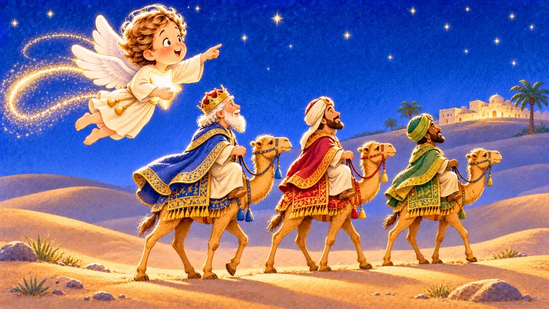
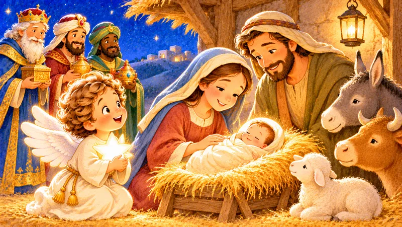
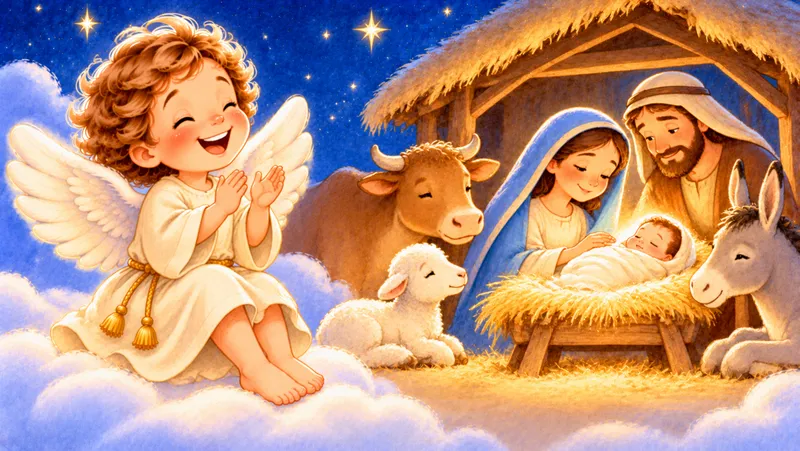
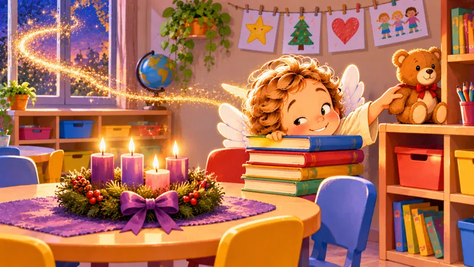

Hace mucho, mucho tiempo, San Miguel hizo una lista con los nombres de todos los ángeles. Al final escribió el de un angelito pequeño que estaba aprendiendo a volar:
—Tú te llamarás Rastro de Dios.
—Tú te llamarás Rastro de Dios.
Rastro de Dios es un angelito pequeño que todavía está aprendiendo a volar. Un día, Dios le pide que cuide una estrella muy especial… ¿Adónde la llevará?
Cuatro semanas para preparar el corazón. Cada domingo encendemos una vela nueva.
Baja despacio: las ilustraciones cambian a medida que avanza la historia. También puedes hojear el libro tal como está impreso.





Adaptación libre del cuento «Rastro de Dios», de Montserrat del Amo (Ediciones SM, colección El Barco de Vapor). Edición: Escuelas Salesianas María Auxiliadora · Nervión · Sevilla.
Tres minutos para verlo en clase o en casa, con la voz de la narradora y los personajes.

Actividades, rutinas y celebraciones para vivir el Adviento con el Angelito Burlón en el aula y en casa.
Las travesuras del angelito en el aula, la estrella que cuidamos entre todos y pequeños gestos cada semana.
Ver proyectoRetos semanales para ser «estela de luz» para los demás: ayudar, compartir y esperar a Jesús con alegría.
Ver proyectoIdeas sencillas para que el Angelito Burlón visite también vuestra casa y preparéis juntos la Navidad.
Ver proyectoLe encanta esconderse. Mientras recorres la web, a veces asoma la cabecita por algún rincón. Si lo ves, ¡tócalo antes de que se escape!
Lo has encontrado 0 veces.
Iremos añadiendo materiales a medida que estén listos.
Versión para leer en pantalla.
DisponibleEl texto del cuento con indicaciones para contarlo en voz alta.
PróximamentePlantilla para que cada clase cuide su propia estrella.
PróximamenteLas escenas del cuento en línea para pintar.
PróximamentePara cantar en los buenos días.
PróximamenteUna oración sencilla para cada semana.
Próximamente